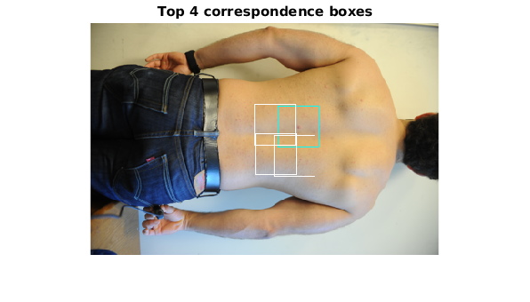

Contents
%
Manual Point Correspondence:
Experiment to test if we can manually select one point for correspondence and then find the matching correspondences across a set of images.
Steps: 1) Given N images, the user selects a point of interest on 1 image 2) Extract features (RGB, possibly SIFT, possibly CNN) from a local patch, and from far-away global patches 3) Scan across a candidate image and try to find the M best matching points. 4) Display the M points
clc clear all close all
Load Images of consideration
% load images im1 = '/media/esteva/ExtraDrive1/ThrunResearch/NikonD3Data/4-9-2015/DSC_7971.JPG'; % Source im2 = '/media/esteva/ExtraDrive1/ThrunResearch/NikonD3Data/4-9-2015/DSC_7983.JPG'; % Target im1 = imresize(imread(im1), 0.1); im2 = imresize(imread(im2), 0.1); img1 = imrotate(im1, 0); img2 = imrotate(im2, 0); if (size(img1) ~= size(img2)) disp('Error: Image size mismatch. Terminating.') return end
Display Images
t = 0.4; diffPos = [0 0.5 0.5 0.5]; diffPos2 = [0 0 0.5 0.5]; APos = [0.5 0.5 0.5 0.5]; WarpedPos = [0.5 0 0.5 0.5]; BPos = APos; f = figure(2); imshow(img2) % image number 1 f.set('units', 'normalized', 'outerposition', BPos) title('Input Image B - target') pause(t) f = figure(1); imshow(img1) % image number 1 f.set('units', 'normalized', 'outerposition', APos) title('Input Image A - source') f = figure(3); imshowpair(img1,img2) f.set('units', 'normalized', 'outerposition', diffPos) title('Overlaid Image - Source and Target') pause(t)
Get A set of Manual Points of interest (from User)
M = 7; points = zeros(M,2); for i = 1:M pause(0.1); f = figure(1); imshow(img1); f.set('units', 'normalized', 'outerposition', APos); title('Input Image A'); [dim2_point, dim1_point] = ginput(1); points(i,1:2) = [dim1_point, dim2_point]; pause(0.1); end point = points(1,:); for i = 1:M
Extract Patch, find best L2 match
point = points(i,:);
patch_width = 50; % Make this an even number so that in patch there is a center column/row for flipping later (think of convolutions)
patch_height = 50;
patch = getPatches(point, patch_width, patch_height, img1); patch = patch{1};
[patch_height, patch_width,~] = size(patch);
% figure; imshow(patch); title('patch')
% Find best L2 match in target via grayscale
I1 = rgb2gray(img1);
I2 = rgb2gray(img2);
p = rgb2gray(patch);
display('Scanning Grayscale')
hmap = scan(p, I2);
% hmap2 = hmap;
% for i = 1:3
% display(['Scanning RGB-' num2str(i)])
% hmap2 = hmap2 + scan(patch(:,:,i), img2(:,:,i));
% end
Warning: Integer operands are required for colon operator when used as index Warning: Integer operands are required for colon operator when used as index Scanning Grayscale
Warning: Integer operands are required for colon operator when used as index Warning: Integer operands are required for colon operator when used as index Scanning Grayscale
Warning: Integer operands are required for colon operator when used as index Warning: Integer operands are required for colon operator when used as index Scanning Grayscale
Warning: Integer operands are required for colon operator when used as index Warning: Integer operands are required for colon operator when used as index Scanning Grayscale
Warning: Integer operands are required for colon operator when used as index Warning: Integer operands are required for colon operator when used as index Scanning Grayscale
Warning: Integer operands are required for colon operator when used as index Warning: Integer operands are required for colon operator when used as index Scanning Grayscale
Warning: Integer operands are required for colon operator when used as index Warning: Integer operands are required for colon operator when used as index Scanning Grayscale
Draw Rectangle around best N matches
% Calculate matches in ascending order hmapr = (hmap + eps) .* imregionalmin(hmap); hmapr(hmapr == 0) = max(hmapr(:)); % hmapr = hmap; [l2norms, I] = sort(hmapr(:), 1, 'ascend'); % Draw N cyan boxes on image N = 4; J = img2; topNpatches = {}; for j = 1:N % Convert heatmap index to points on images point_found_hmapr = [mod(I(j), size(hmap,1)), floor( I(j) / size(hmap,1) )]; point_found = point_found_hmapr + size(p)/2; % Patch found topNpatches(end+1) = getPatches(point_found, patch_width, patch_height, img2); % First correspondence is cyan, the rest are white if(j == 1) colour = uint8([0 255 255]); % [R G B]; class of colour must match class of I else colour = uint8([255 255 255]); % [R G B]; class of colour must match class of I end % Overlay Rectangle of specified color rectangle = int32([point_found(2:-1:1) - [patch_width/2 patch_height/2], patch_width, patch_height]); shapeInserter = vision.ShapeInserter('BorderColor','Custom','CustomBorderColor',colour); J = step(shapeInserter, J, rectangle); end figure; imshow(J); title(['Top ' num2str(N) ' correspondence boxes']) % Show Top Match new_patch = topNpatches{1}; figure; subplot(1,2,1); imshow(new_patch); title('Matched'); subplot(1,2,2); imshow(patch); title('Original')

end
Misc code
% Computes i,j of maximum of matrix hmap % [~,i] = max(hmap); % [m, j] = max(max(hmap)); % i = i(j);